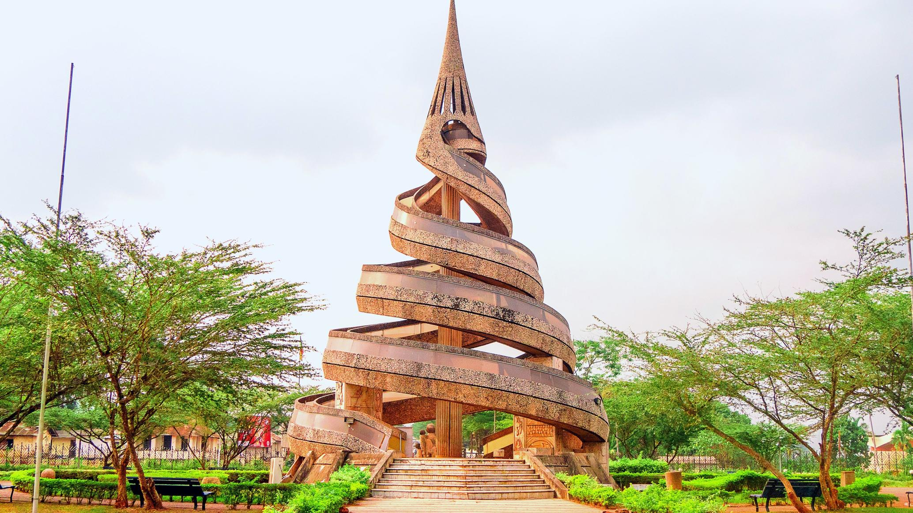

<div class="details-home">
    <div class="content my-container">
        <div class="top">
            <h2 class="title">DÉTAILS DES CÉRÉMONIES</h2>
            <p>

Du lundi 2 au samedi 7 juin 2025, la famille Kombang organise les obsèques de feu Monsieur Kombang, notre père, grand-père, frère et ami.

👉 À partir du lundi 2 juin, des veillées sans corps se tiennent chaque soir au domicile familial de Japuma, pour préparer spirituellement ce moment d’hommage, prier ensemble et soutenir la famille dans la foi.

Le jeudi 5 juin, la levée de corps ouvrira officiellement les cérémonies, suivie des grandes étapes à Douala et Yaoundé.

Ces moments sont pensés pour honorer sa mémoire, célébrer sa vie, et accompagner son départ avec dignité et amour, dans la foi et l’unité familiale.

Retrouvez ci-dessous le programme complet, réparti en trois temps forts, entre Douala et Yaoundé.
</p></div>

        <div class="ceremonies">
            <div class="ceremony civil">
                
                <div class="text-bloc">
                    <span class="date" data-aos="fade-up" data-aos-duration="500">05 Juin 2025</span>
                    <h3>Levée de corps à l'hopital géneral de douala</h3>
                    <p>La journée du jeudi marque le début des cérémonies, avec la levée de corps à l’hôpital général de Douala, suivie d’un cortège vers la maison familiale à Japuma.

Un premier culte de veillée se tiendra à japoma</p>
                    <button data-aos="fade-up" routerLink="/obseques">
                        <span>Plus de detail</span>
                        <i class="pi pi-arrow-up-right"></i>
                    </button>
                </div>
            </div>

            <div class="ceremony church">
                
                <div class="text-bloc">
                    <span class="date" data-aos="fade-up" data-aos-duration="500">05 Juin 2025</span>
                    <h3>Veillée à son domicile de Japoma</h3>
                    <p>Ce moment marque le début officiel des cérémonies.
Famille et proches se rassemblent à l’Hôpital Général de Douala pour accompagner Papa dans sa dernière sortie de la morgue, dans le respect, la foi et l’émotion.

La journée se poursuivra avec un culte d’adieu à la chapelle, puis un cortège funèbre jusqu’à Japuma, où débutera la veillée.</p>
                    <button data-aos="fade-up" routerLink="/obseques">
                        <span>Plus de details</span>
                        <i class="pi pi-arrow-up-right"></i>
                    </button>
                </div>
            </div>

                        <div class="ceremony civil">
                
                <div class="text-bloc">
                    <span class="date" data-aos="fade-up" data-aos-duration="500">06 Mai 2025</span>
                    <h3>Veillée à son domicile de Nkoabang</h3>
                    <p>Transfert du corps vers Yaoundé dans la matinée.
À Nkoabang, une seconde veillée de prière et de recueillement est prévue dans la soirée, avec témoignages, chants et prédication.</p>
                    <button data-aos="fade-up" routerLink="/obseques">
                        <span>Plus de details</span>
                        <i class="pi pi-arrow-up-right"></i>
                    </button>
                </div>
            </div>

                        <div class="ceremony church">
                
                <div class="text-bloc">
                    <span class="date" data-aos="fade-up" data-aos-duration="500">07 Juin 2025</span>
                    <h3>Inhumation à son domicile de Nkoabang</h3>
                    <p>Culte & Inhumation

Journée d’hommage final et d’inhumation à Nkoabang.
Culte solennel, chants, repas fraternel.

La cérémonie se terminera par la mise en terre de Papa dans la strite intimité familiale.</p>
                    <button data-aos="fade-up" routerLink="/obseques">
                        <span>Plus de details</span>
                        <i class="pi pi-arrow-up-right"></i>
                    </button>
                </div>
            </div>

        </div>
    </div>
</div>
